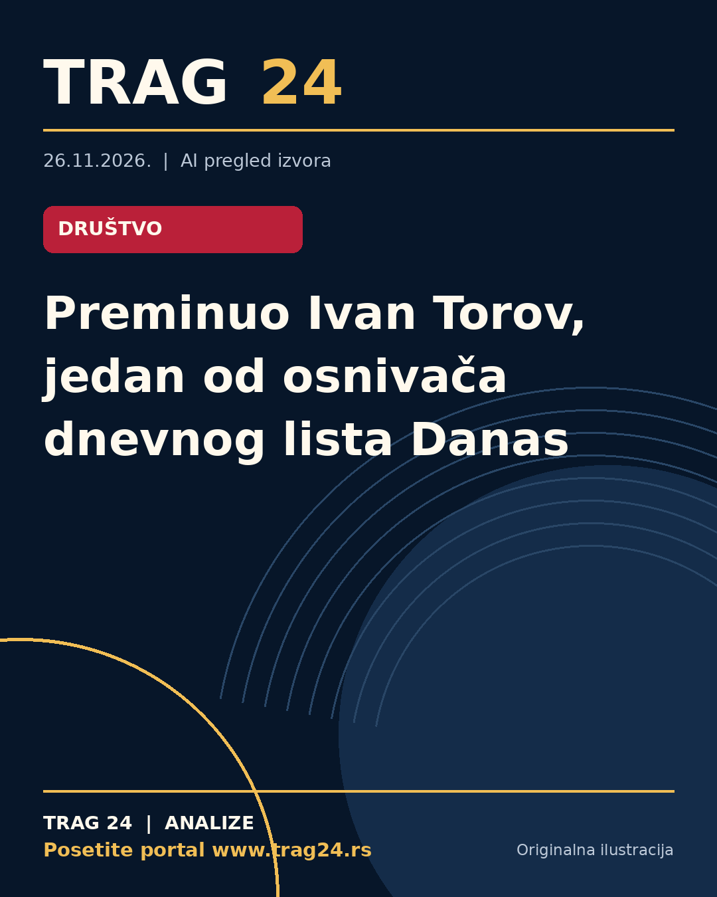

Preminuo Ivan Torov, jedan od osnivača dnevnog lista Danas

ŠTA SE DOGODILO
Ivan Torov, istaknuti novinar, kolumnista, urednik i jedan od osnivača dnevnog lista Danas, preminuo je u Beogradu u 80. ili 81. godini života, kako navode izvori, a njegova porodica je saopštila ovu vest.
HRONOLOGIJA
Rođen je 22. decembra 1945. godine u Štipu, Makedonija, a od 1965. godine živeo i radio u Beogradu. Karijeru je započeo u časopisu Student, zatim je od 1968. radio u Borbi gde je 1969. postao stalni novinar. Tokom sedamdesetih godina radio je i u radiju Studio B. U Borbi je proveo najveći deo karijere do 1994. godine, obavljajući sve novinarske pozicije od reportera do zamenika glavnog urednika. Bio je dugogodišnji izveštač sa Savezne skupštine, skupštine Srbije i Kosova tokom raspada Jugoslavije. Od 1995. godine bio je komentator Naše Borbe, a 1997. sa 17 kolega osnovao je list Danas, gde je do kraja karijere radio kao komentator, analitičar i kolumnista. Završio je novinarsku karijeru kao kolumnista sajta Peščanik.
ŠTA NAVODE IZVORI
Svi izvori potvrđuju da je Ivan Torov bio jedan od osnivača lista Danas i da je dugogodišnji novinar sa dugom karijerom, posebno u periodu raspada Jugoslavije. Navode i da je bio dobitnik više značajnih novinarskih nagrada, uključujući Svetozar Marković, Nikola Burzan i Jug Grizelj. Izvori se slažu da je njegova supruga Milica Torov takođe bila novinarka, i ostale su pomenute njegove ćerke, zet i unuk. Informacije o mestu i vremenu održavanja ispraćaja dolaze iz izvora Nova.rs i Danas, gde je navedeno da će biti održan 28. novembra na Novom groblju u Beogradu.
ŠTA JE POTVRĐENO
Potvrđeno je da je Ivan Torov preminuo u Beogradu, da je bio jedan od osnivača lista Danas, kao i njegova bogata novinarska karijera u Jugoslaviji i Srbiji. Potvrđene su i nagrade koje je dobio tokom svog rada. Porodica je navela sve ključne podatke o njegovom životu i radu. Takođe je potvrđeno ko su njegovi najbliži srodnici i kada će biti održan ispraćaj.
ŠTA NIJE POTVRĐENO
Različito je navedena njegova godina smrti – izvori Nova.rs i Danas navode da je preminuo u 80. godini, dok Nedeljnik navodi da je imao 81 godinu. Nema informacija o uzroku smrti. Nisu potvrđene dodatne informacije o njegovom privatnom životu ili detalji o detaljnim uzrocima i okolnostima smrti.
ŠTA OSTАJE OTVORENO: Ostaje nejasna precizna godina starosti u trenutku smrti zbog razlike u izvorima. Takođe nije poznato više detalja o okolnostima smrti. Javnosti nisu dostupne izjave drugih članova porodice, kolega ili naknadne reakcije na njegovu smrt.
Izvori
- https://nova.rs/vesti/drustvo/preminuo-ivan-torov-istaknuti-kolumnista-novinar-i-jedan-od-osnivaca-dnevnog-lista-danas/
- https://www.nedeljnik.rs/preminuo-jedan-od-osnivaca-danasa-ivan-torov/
- https://www.danas.rs/vesti/drustvo/umro-ivan-torov/
Ova analiza je pripremljena uz pomoć veštačke inteligencije na osnovu javno dostupnih izvora. Navodi izvora nisu nužno nezavisno potvrđeni.